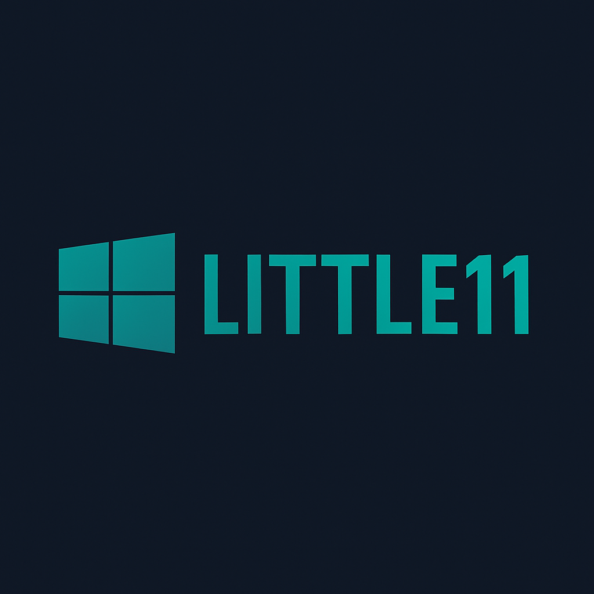

LITTLE11
FPS için optimize edilmiş, ultra hafif Windows 11 deneyimi!
🚀 İndir (ISO)
⚡ Sistem Özellikleri
Temel RAM kullanımı: ~1.5 GB
Disk kullanımı: 40.5 GB
Windows 11 PRO tabanlı
JVM, reg tweak ve Lunar Client destekli
Görev çubuğu indirirseniz özelleştirilebilir
az bir gereksiz uygulama var